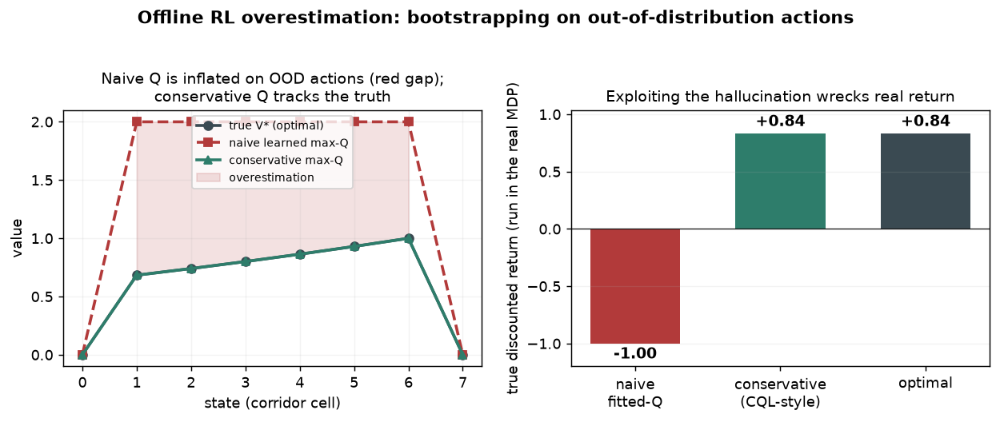

On a fixed dataset, a naive Q-learner hallucinates high values for actions it never saw — then the greedy policy walks straight into them. A conservative penalty fixes it.

Offline (batch) RL learns a policy from a fixed logged dataset with no new interaction — the setting when real trials are costly or unsafe. The catch: the Bellman backup takes a max over ALL actions, including out-of-distribution ones the dataset never tried, so their bootstrapped Q-values are never corrected by a real reward. Conservative Q-learning (CQL) adds a penalty that pushes those unsupported Q-values down, keeping the learned value honest.